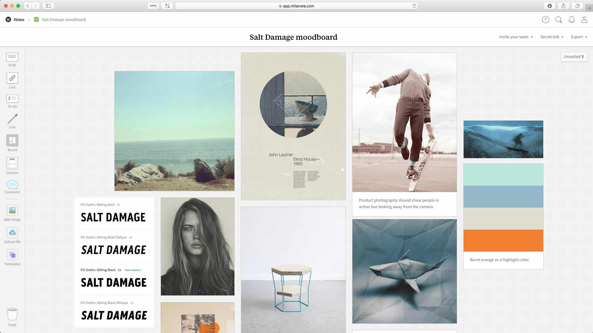

Продовжуємо знайомство з основами Figma. Сьогодні дізнаємося про нові прийоми роботи з шарами, у тому числі як їх виділяти, переміщувати, групувати, блокувати і ховати.
Навчимося вставляти растрове зображення в проєкт і дізнаємося, як працювати з піпеткою, яка дозволяє зчитати код кольору із зображень і фігур.
Останній розділ з новими командами стосується виставлення точних відстаней між об'єктами, що важливо надалі при роботі з сітками.
- Групи
- Створення та видалення групи
- Згортання та розгортання групи
- Вкладені групи
- Перегрупування
- Виділення шарів
- Вибираємо вкладений шар
- Вибираємо кілька шарів (новий спосіб)
- Вибираємо діапазон шарів
- Вибираємо перекритий шар
- Знімаємо виділення
- Робота з шарами
- Блокування та приховування шарів
- Копіювання, вирізання та вставка шарів
- Вставка у позицію іншого об'єкта
- Назви шарів
- Перейменування шарів
- Давайте змістовні назви
- Імпорт зображень
- Референси та мудборди
- Імпорт із буфера обміну
- Імпорт із файлу
- Інструмент піпетка
- Швидке привласнення кольору
- Привласнення кольору пікселів зображення
- Точне позиціювання
- Як поділитись проєктом
- Домашнє завдання
- Висновки
Групи
Виконуючи завдання з минулої лабораторної роботи, ви обов'язково зіткнулися з проблемою управління шарами. Наприклад, будь-яка кнопка складається з прямокутника (визначає межі) та тексту (який пояснює, що ця кнопка робить). Щоб перемістити кнопку, вам доведеться спочатку виділити кожну її складову. А якщо ви захочете перемістити верхню частину сайту з навігаційним меню, яке складається з 5 текстових елементів? Це вже займе більше часу. З такими мікро-завданнями будете зустрічатись постійно.
Для вирішення цієї проблеми у Figma існує декілька способів: використання груп, фреймів або автолейаутів. Поки що ми розглянемо найпростіший варіант, а саме групування елементів.
Наприклад, прямокутник і текст можна об'єднати в одну групу за змістом і це вже буде кнопка. Це дуже зручно та значно прискорює роботу.
Група — це спеціальний шар, який вміщує інші шари і призначена для об'єднання і спрощення подальшої роботи з ними. Група працює як з великою кількістю шарів, так з одним.
Створення та видалення групи
Припустимо, що нам потрібно об'єднати кілька примітивів, що складають кнопку у групу. Для цього:
- Скористаємося прийомом з минулої лабораторної роботи, затиснувши ліву кнопку миші зверху ліворуч і потягнувши її в нижній правий кут, тим самим виділимо всі примітиви, з яких побудована кнопка. На панелі зліва підсвічуються виділені шари;
- Натискаємо праву кнопку миші над будь-яким із компонентів кнопки і з меню обираємо Group Selection. Доступна і комбінація гарячих клавіш для швидкого об'єднання: Command + G у MacOs або Control + G у Windows;
- Зверніть увагу, що в панелі шарів замість двох виділених примітивів з'явився один шар з новою іконкою та назвою Group 1 – це і є наша кнопка;
- Тепер ви можете працювати з кнопкою, як зі звичайним шаром: переміщувати, масштабувати, дублювати і так далі без необхідності виділяти кожен шар окремо;
- Щоб розбити кнопку назад на складові, потрібно виділити групу і в контекстному меню вибрати Ungroup або натиснути Shift+Command+G у MacOs або Shift+Control+ G у Windows;
Згортання та розгортання групи
Як ви помітили, після створення групи вміст автоматично приховується. Цей стан називається згорнутою групою. Щоб показати вміст, потрібно розгорнути групу:
- Підвести курсор до панелі шарів. Зліва напроти кожної групи з'явиться маленька трикутна стрілочка, що вказує вправо;
- Клацаєм на стрілочку і вміст групи стане видимим. Стрілка повернеться донизу, сигналізуючи про розгорнутий стан;
- Щоб знову згорнути вміст, ще раз натисніть на стрілку.
Вкладені групи
Групи можуть включати інші групи. Для цього достатньо вибрати кілька шарів із групою і зробити ще одну групу. Шар, який знаходиться всередині групи, називається дочірнім. Шар-група, в якій знаходяться інші шари, називається батьківською.
Навіщо це може знадобитися? Все з тією ж метою: для зручної та швидкої роботи. Розглянемо приклад. Кілька кнопок та логотип з підкладкою можуть бути об'єднані в так звану шапку сайту (англійською – header, читається хедер) – елемент дизайну, який повторюється на всіх сторінках і зазвичай містить засоби швидкої навігації. В очах Figma це просто група з іншими вкладеними групами.
Так ось, якщо нам знадобиться перемістити кнопки всередині шапки сайту, то ми можемо розгорнути відповідну групу та працювати з групою кожної кнопки.
Перегрупування
Інколи може знадобитись перемістити шар з однієї групи до іншої або доповнити групу новими прошарками.
Для цього достатньо перетягнути шар на потрібну групу в панелі шарів і він миттєво опиниться всередині. Також можна перетягнути його у потрібне місце між шарами усередині розгорнутої групи. Якщо шар потрібно прибрати з групи, його потрібно перетягнути в область над групою або під нею, як показано у відео:
Виділення шарів
Ми вже вміємо виділяти об'єкти за допомогою клацання по них у робочій області або на панелі шарів. Також, ми знаємо, як виділити кілька шарів за допомогою рамки, затиснувши ліву кнопку миші в робочій області. Зараз познайомимося з новими прийомами та дізнаємось, як виділяти вкладені шари без розгортання групи.
Вибираємо вкладений шар
Повернемося до нашого прикладу з шапкою сайту. Щоб виділити кнопку, достатньо зробити подвіний клік по ній, що автоматично розгорне верхню групу.
Щоб спуститися нижче по дереву вкладеності та виділити напис на кнопці, достатньо зробити ще один подвійний клік. Як ви вже зрозуміли, подвійний клік дозволяє виділити об'єкти на один рівень вкладеності нижче за поточний.
Подвійний клік прискорює виділення під час роботи з вкладеними шарами та значно швидше за розгортання груп вручну. Але що якщо рівнів вкладеності більше одного? Тоді доведеться робити кілька подвійних кліків. Щоб виділити об'єкт на нижньому рівні вкладеності, достатньо затиснути Command у MacOs або Ctrl у Windows і зробити клацання по об'єкту – це називається глибоке виділення (deep selection).
Вибираємо кілька шарів (новий спосіб)
Затисніть кнопку Command у MacOs або Ctrl у Windows та клікайте на шари один за одним на панелі ліворуч. Затисніть клавішу Shift та об'єднайте об'єкти кліком або рамкою в робочій області. Кожне нове виділення буде об'єднуватися з попереднім. Цей спосіб дуже зручний при створенні груп та у комбінації з глибоким виділенням.
Вибираємо перекритий шар
Інколи трапляються ситуації, коли шар повністю перекритий іншим і його неможливо виділити у робочій області. Залишається тільки копатися у панелі шарів. У такому випадку достатньо клікнути правою кнопкою миші по області, де знаходиться невидимий шар і з випадаючого меню обрати Select Layer, а потім клацнути по назві потрібного вам шару.
Ще один варіант: затисніть Ctrl і натисніть праву кнопку миші на область перекриття шару. Замість контекстного меню відразу з'явиться список шарів, що значно швидше за попередній спосіб.
Ці способи виділення працюють і для заблокованих шарів, але не для невидимих!
Блокування та приховування шарів
Іноді доводиться працювати виключно над одним елементом інтерфейсу і випадкове виділення інших шарів лише заважає. У таких випадках корисно заблокувати або приховати деяку частину дизайну. Для цього:
- Виділіть потрібні шари;
- Наведіть курсор на виділені об'єкти в робочій області або панелі шарів;
- Викличте контекстне меню правою кнопкою миші;
- Виберіть Lock/Unlock, щоб заблокувати або Show/Hide, щоб приховати шар;
- Якщо навести курсор на шар у панелі, то праворуч від нього з'являться іконки дій: натисніть на замок, щоб заблокувати/розблокувати або на око, щоб приховати/показати шар;
- Але краще користуватися гарячими кнопками: заблокувати – Shift+Command+L у MacOs або Shift+Control+L у Windows; приховати – Shift+Command+H у MacOs або Shift+Control+H у Windows;
- Розблокування та показ прихованих шарів виконуються аналогічно, але виділяти їх слід на панелі шарів.
Копіювання, вирізання та вставка шару
Для копіювання об'єкта виділіть його та натисніть Command + C у MacOs або Ctrl + C у Windows.
Щоб вирізати об'єкт, виділіть його та натисніть Command + X у MacOs або Ctrl + X у Windows.
Для вставки виберіть об'єкт або зовсім приберіть виділення та натисніть Command + V у MacOs або Ctrl + V у Windows.
Копіювання, вирізання та вставка об'єктів, такі звичні по іншим програмам команди, у деяких новачків Figma викликають здивування. Справа у тому, що позиція, куди буде вставлений об'єкт, залежить від того, який зараз вибраний тип об'єкта (примітив або група) і на якому рівні вкладеності він знаходиться. Розглянемо на прикладах:
- Якщо нічого не вибрати, то вставка відбудеться в тому ж місці, де знаходився скопійований об'єкт;
- Якщо вибрати групу або примітив всередині групи, то вставка відбудеться у центрі цієї групи;
Спочатку така поведінка здається дивною, але якщо розуміти, як це працює, то з часом ви звикнете. Перегляньте відео, зверніть увагу, який тип об'єкта вибрано перед вставкою і як від цього змінюється позиція вставки.
Ще один важливий момент: на панелі шарів вставлений об'єкт завжди виявляється вище або нижче обраного об'єкта (що теж дещо дивно, тому що в інших подібних програмах вставка відбувається завжди вище вибраного шару).
Вставка в позицію іншого об'єкта
Позицією будь-якого об'єкта Figma вважається його верхній лівий кут. Щоб зробити позицію вставки більш передбачуваною, достатньо після копіювання або вирізання вибрати об'єкт і натиснути Shift+Command+V у MacOs або Shift+Ctrl+V у Windows. Новий об'єкт буде вставлено акуратно у лівому верхньому куті виділеного шару.
Назви шарів
Навести порядок і зробити зрозумілим той хаос, який відбувається у надрах будь-якого великого проєкту, одними групуваннями не вийде. Знадобиться продуманна система іменування. Це займає додатковий час, але потім заощадить нерви при пошуку потрібного шару та й frontend-розробник скаже дякую.
Перейменування шарів
Щоб перейменувати шар треба:
- Вибрати потрібний об'єкт на робочій області або панелі шарів і натиснути Command + R у MacOs або Ctrl + R у Windows;
- Змінити назву шару;
- Натиснути Enter, щоб зберегти зміни;
- Також можна зробити подвійний клацання по назві шару на панелі, щоб увійти в режим редагування.
Щоб перейменувати групу шарів потрібно:
- Вибрати кілька шарів;
- Натиснути Command + R у MacOs або Ctrl + R у Windows;
- У полі Rename to вписати нову назву та натиснути Enter.
Задавайте змістовні назви
Назви повинні бути зрозумілі не тільки вам, а й розробникам, які будуть працювати з вашим дизайном. Якщо ви працюєте із закордонною компанією, то назви мають бути виключно англійською мовою. Якщо ви не знаєте, як щось перекласти, використовуйте Google Translate.
Назви краще задавати без пробілів, а замість них використовуйте знак мінус або нижнє підкреслення. Справа у тому, що надалі деякі прошарки експортуватимуться у файли ресурсів розробниками. А для них зручніше дотримуватись саме таких правил у назвах файлів.
Ось невеликий список типових назв прошарків, щоб у вас було уявлення:
- Header
- Footer
- button_cta
- modal-export
- Icon_Reload
- img_banner
Референси та мудборди
Референс, референси (від англ. reference – рекомендація, еталон, натяк, посилання) — один або кілька прикладів зображень, які надає замовник, щоб показати, що він хоче отримати в результаті вашої роботи. Референс може стосуватися не всього сайту, а лише якогось конкретного аспекту. Наприклад, буде прохання зробити кольори як у першому референсі, структура шапки – як у другому, а навігаційне меню мобільної версії – як у третьому. Референси супроводжуть технічне завдання та роблять його зрозумілішим. Референсом може бути не лише зображення, а й посилання на сайт або навіть фото/відео.
Мудборд (від англ. mood board – дошка настрою) — це добірка зображень, яку складає дизайнер, з метою показати замовнику та отримати загальне враження на ранньому етапі, ще до початку роботи. За допомогою таких добірок ми намагаємося зрозуміти смак клієнта, його уподобання. Кращі екземпляри з мудборду надалі можуть використовуватися як відправна точка для початку дизайну. Як і у випадку з референсами, зображеннями для мудборда можуть виступати дизайни інших сайтів, фотографії (як приклади вдалих поєднань кольорів), ілюстрації, шрифти, набори кольорів і так далі.
Для створення мудбордів існують спеціальні безкоштовні сервіси: Milanote, Pinterest . Але не поспішайте там реєструватись, для початку нам вистачить можливостей Figma.

Імпорт із буфера обміну
Щоб працювати з референсами і створювати мудборди, нам потрібно якимось чином вставити картинки прямо в робочу область. У Figma є кілька механізмів для цього. Спочатку познайомимося з найпростішим із них. Щоб вставити картинку, потрібно:
- Знайти будь-яке зображення у браузері;
- Клацнути правою кнопкою миші по ньому, щоб викликати контекстне меню;
- Вибрати команду Copy Image, що змусить браузер скопіювати зображення у буфер обміну;
- Перейти назад у Figma;
- Натиснути Command + V у MacOs або Ctrl + V у Windows, щоб вставити зображення з буфера;
- Зверніть увагу, що якщо зображення виявиться великим, то при його вставці воно перекриє всю робочу область. Не варто цього лякатися, достатньо зменшити картинку;
- Далі із зображенням можна працювати, як із прямокутником: змінювати положення, розміри тощо.
У Figma є обмеження на вставку великих растрових зображень: якщо ширина або висота зображення перевищує 4096 пікселів, то вставлений об'єкт буде автоматично відмасштабований до вказаних величин.
Імпорт із файлу
Іноді графічні ресурси надсилають в архівах або файли вже знаходяться на вашому комп'ютері. Достатньо перетягнути файл зображення на робочу область Figma, як показано у відео. Позиція вставленого зображення залежатиме від того, де ви відпустите ліву кнопку миші після перетягування – центр картинки опиниться під курсором.
Інструмент піпетка
Піпетка або Eyedropper Tool або Color Picker – дозволяє зчитати колір з будь-якого примітиву та призначити його вибраному об'єкту. Дуже корисний для вибору кольорової гами на основі зображень. Ми вже знаємо, як скопіювати значення кольору з одного об'єкта та вставити його в інший. Але є і швидший спосіб.
Швидке привласнення кольору
Для швидкого копіювання кольору достатньо:
- Вибрати один або кілька об'єктів, які потрібно перефарбувати. Якщо у нього є заливка або обведення, то її колір буде замінено. Якщо об'єкт має і заливку, і обведення, то замінено буде лише колір заливки;
- Натиснути кнопку I або Ctrl+C, щоб активувати піпетку;
- Навести курсор на точку робочої області, з якої потрібно зчитати колір. Зверніть увагу на збільшувальне коло з піксельною сіткою у верхньому правому кутку, яке з'являється для вашої зручності;
- Залишилося клацнути лівою кнопкою миші для підтвердження;
- Якщо вибраний об'єкт містить колір заливки та обведення і ви хочете змінити колір обведення за допомогою піпетки, то для цього потрібно натиснути на колір обведення, щоб викликати вікно вибору кольору і тільки потім викликати піпетку.
Точне позиціонування
Figma має дуже зручний інструмент для точного позиціонування, який показує відстань між об'єктами. Щоб ним скористатися:
- Виділіть об'єкт, який ви хочете точно підігнати;
- Затисніть кнопку Option у MacOs або Alt у Windows;
- Підведіть курсор до іншого об'єкта, щоб побачити відстань у пікселях;
- Одночасно змінюйте положення виділеного об'єкта за допомогою кнопок-стрілок.
Як поділитись проєктом
Для цього у Figma є кнопка Share у верхньому правому кутку. Інструкція:
- Натисніть Share;
- Перевірте, що в розділі Who has access (Хто має доступ) стоїть налаштування Anyone. Це означає, що будь-хто матиме змогу переглянути ваш файл, якщо ви надішлете на нього посилання. Зазвичай це налаштування стоїть по замовчуванню в драфтах;
- Клацніть Copy link, щоб скопіювати посилання у буфер обміну;
- Тепер надішліть посилання людині, з якою хочете поділитися вашим файлом. Доступ буде лише для перегляду: всі, хто перейде за посиланням, не зможуть нічого змінити.
- Імпортуйте фото пейзажу, виберіть 5 основних кольорів піпеткою та створіть палітру для подальшого використання в дизайні.
- Зайдіть на сайт Behance
(тут дизайнери діляться своїми роботами).
Введіть у пошуковому рядку Behance запит "UI web app". Намагайтеся знайти простенький дизайн сайту і перемалюйте його якомога детальніше, наскільки у вас вийде (ігноруйте те, що поки не можете відтворити). Ілюстрації та фото замініть своїми, шукайте їх на сайті Unsplash;
Під час виконання цих завдань використовуйте групи та гарячі клавіші. Намагайтеся використовувати на практиці якнайбільше прийомів з цього уроку.